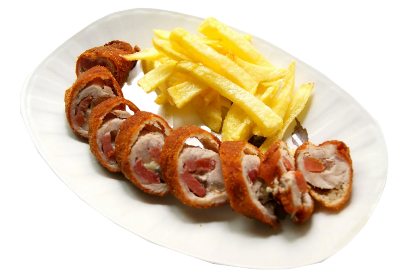
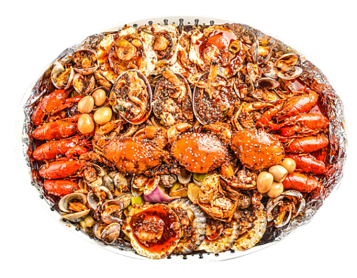

1 / 4

Caption Text
2 / 4

Caption Two
3 / 4

Caption Three
4 / 4

Caption Four
Somos un acogedor bar de comida casera ubicado en el corazón de Andalucía. Nuestro objetivo es ofrecer a nuestros clientes una experiencia culinaria auténtica y reconfortante, inspirada en los sabores tradicionales de esta región tan rica en cultura gastronómica.
En nuestro bar, nos enorgullece utilizar ingredientes frescos y de calidad, provenientes de los productores locales de Andalucía. Cada plato que servimos es preparado con pasión y dedicación, evocando los sabores y aromas que nos transportan a los hogares andaluces.
Nuestra carta cuenta con una variedad de platos caseros, desde deliciosas tapas hasta suculentos guisos y postres tradicionales. Nuestro equipo de chefs talentosos se esfuerza por resaltar los ingredientes locales en cada creación culinaria, brindando a nuestros comensales una auténtica experiencia gastronómica andaluza.
Además de nuestra exquisita comida casera, nuestro bar ofrece un ambiente acogedor y familiar. Nuestro personal amable y atento se asegurará de que te sientas como en casa, brindándote un servicio excepcional y haciéndote sentir parte de nuestra familia.
Ven y disfruta de una experiencia culinaria única en nuestro bar de comida casera en Andalucía, donde la tradición se fusiona con la pasión por la cocina. ¡Te esperamos con los brazos abiertos!